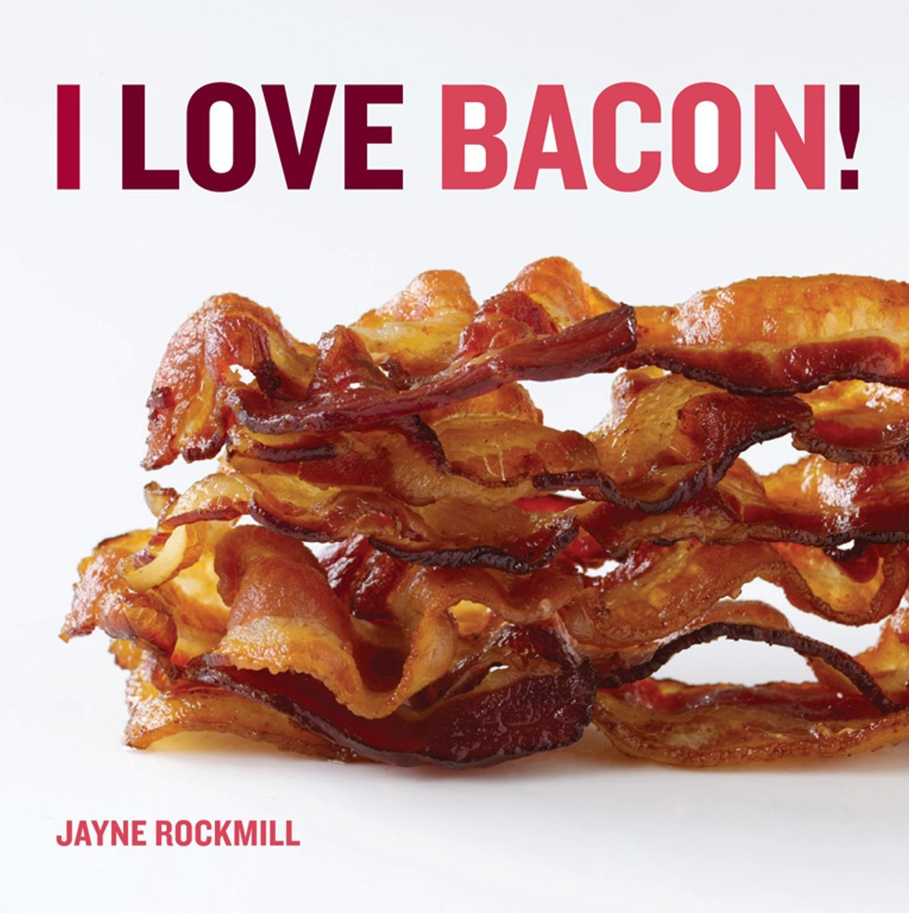

About Me

Hi ya'll, I am Ashley and this is a page about me.
I am 42, I have 2 kids, a son (16) and a daughter (20), and my life is quite boring.
I recently quit my job at Dollar Tree. I was a store manager at the busiest store in Richmond. It burned me out after 13 years. Prior to that, I worked for Save-a-lot and Foodlion
I like to travel. I've driven across most of the United States and some into Canada. I'm hoping to one day be able to drive across the whole country and see as much of America as possible
Im my spare time, I like to play golf (terribly), I also like working on my 1993 Mazda Miata.